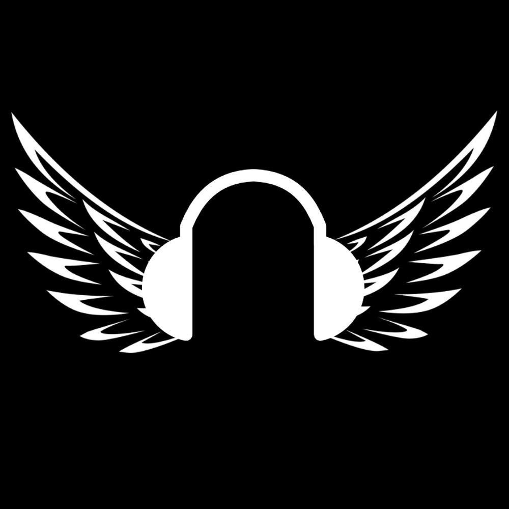

TEDDAC

Bonjour. Je m'appelle TEDDAC, et je compose de la musique depuis
maintenant plusieurs années. Je suis polyvalent mais j'aime
surtout faire de l'électro, comme de la dubstep, brostep, et bien
d'autres.
Quand le choix du logiciel s'est posé à moi, j'ai opté pour FL Studio, un logiciel
franco-belge simple à prendre en main, et de bonne facture !
KENZO
Hey. Je m'appelle KENZO, je compose de la musique depuis
quelques ans et j'en joue depuis mon plus jeune âge.
Je suis moi aussi polyvalent mais la French House et le hip-hop m'intéresse énormément !
Quand j'ai du choisir mon Daw de prédilection, j'ai tout de suite aimé Ableton Live, un logiciel
Allemand complexe à prendre en main si on a peu de connaissance mais très puissant !
Seikko
Hey, je suis Seikko, fondateur de MELODICA et jeune producteur de musique qui s'intéresse à tout style mais plus particulièrement l'univers hip-hop, rap, trap ! Je travaille sur FL Studio et aussi d'autres logiciels, tel que iZotop RX7 et d'autres, alors si vous avez une question n'hésitez pas !
Mélodica :
Mélodica est un projet conçu sur le principe de communauté. Il est, à l'origine, un serveur discord ou
tous les membres peuvent aider les autres peu importe leurs niveaux en production musicale. Le projet a
très vite muté pour devenir un site internet et une chaîne YouTube proposant des tutos pour apprendre
gratuitement la production musicale, des vlogs en rapport avec la musique, des lives avec des sessions de
productions et biens d'autres contenues !